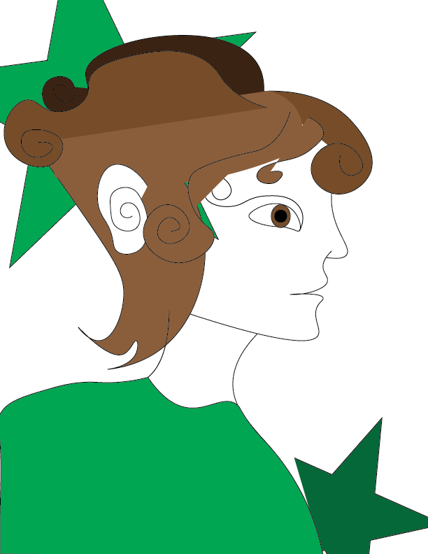

For the p5.js module, I started off by making a Junji Ito/Uzumaki inspired self portrait. Then, I created a rainbow drawing tool inspired by the pride flag. Then, for my one button game, I created a small game where each time you load the game, you have to click on the correct shape before the timer runs out to win.
Use the drawing tool here! play the one button game here! 